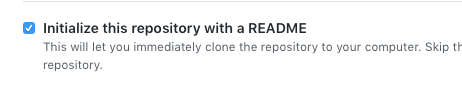
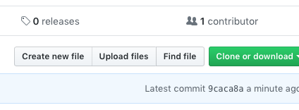
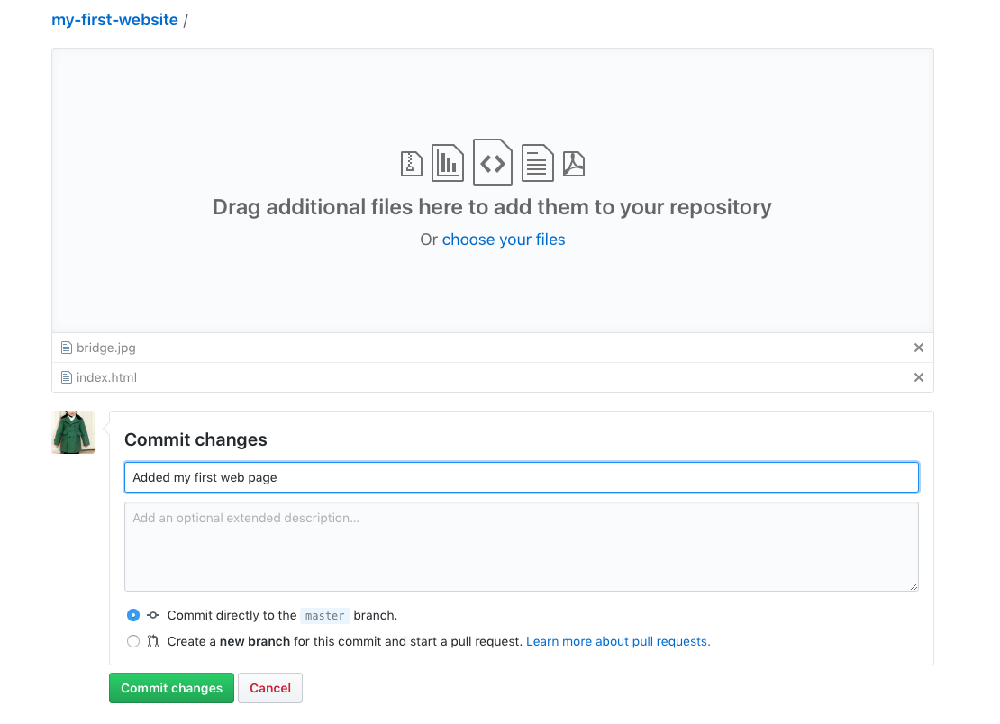
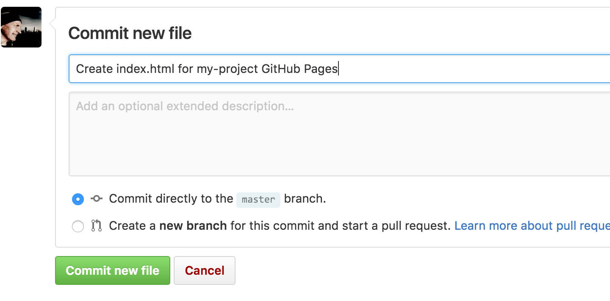
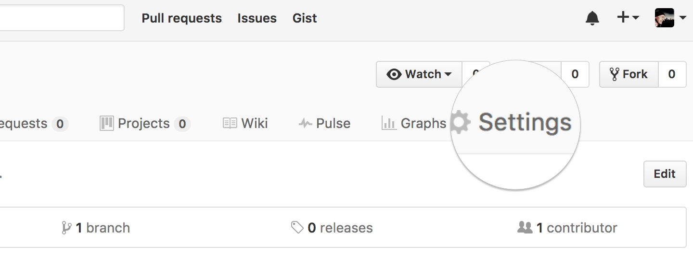
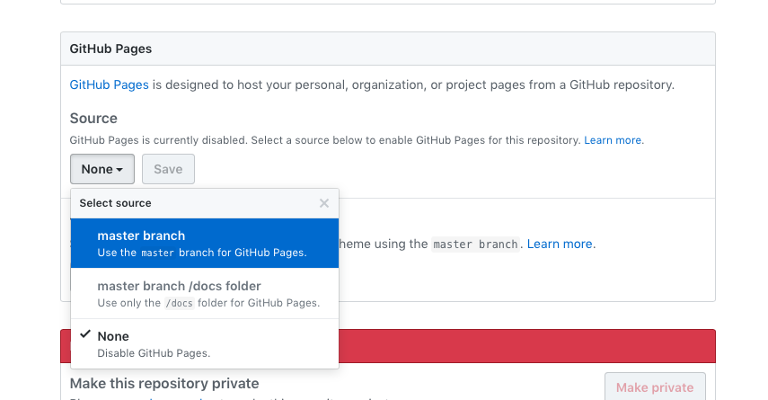
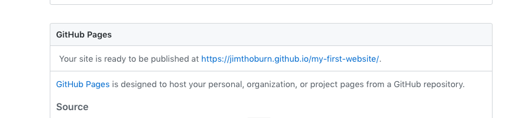

Find or write some text about a subject you’re interested in. Here’s an example. It will also be helpful to have at least one image and a URL to another website. Wikipedia may be a good place to find these.
Download and open Sublime Text. (Or use your favorite code editor.)
Create a new HTML document. and save it with the name “index.html”. That’s a special name that tells a web browser, “This is my home page”.
Add your text in the space between the opening <body> tag and the closing </body> tag. You can also add the name of your image on a line by itself, and also the URL you found on a line by itself. This is your content.
Mark up your content by following these examples. This will make the content understandable to software like search engines, screen readers, and web browsers.
Open your document in your favorite web browser, to see how it’s looking.
Congrats! You just made a web page by hand.
Style your content (optional)
Create an empty file with a “.css” extension. This will be your style sheet.
Add a link to the style sheet in your HTML document.
Open the style sheet and change the colors, margins and typeface to your liking.
Publish your page for the world to see!
GitHub Pages is a place where you publish your web page for free.
Create a new repository. User lowercase letters for the name of your repository, and use dashes instead of spaces. For example: “nuuk-greenland” Be sure to check the “Initialize this repository with a README” checkbox.
Press the “Upload files” tab within your new repository.

Upload your “index.html” file and any other files you created during this tutorial (for example, images and style.css).

Scroll to the bottom of the page, write a commit message, and commit the new files.

Press the “Settings” tab within your new repository.

Scroll down to the GitHub Pages section. Then select the master branch source and press the Save button.

Scroll down to the GitHub Pages section one more time, and press the link to your published project. The link should look a bit like this: http://username.github.io/repository

And you’re done!
You can make further changes to your files by uploading them again, or by visiting your repository and selecting a file to edit.